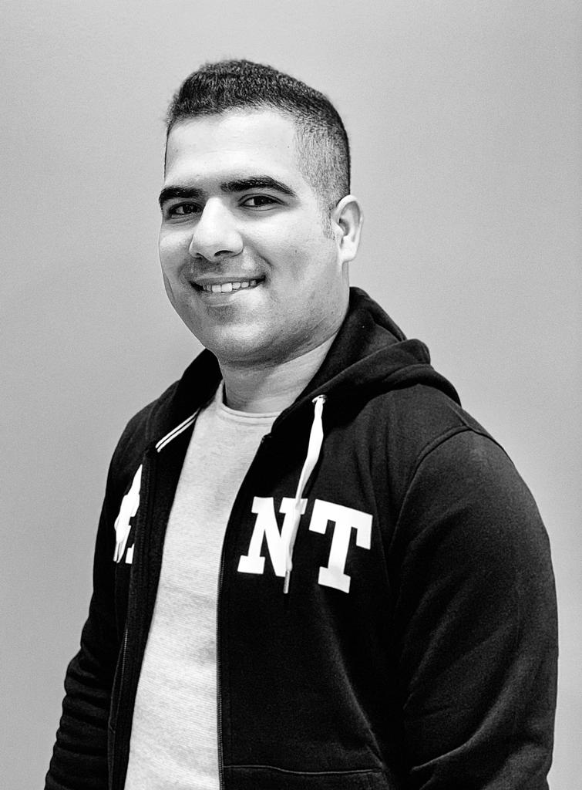

Hello, I'm
Ashkan Amiri
Software & Web Developer
About Me
I am currently studying at Nackakademin as a Java developer. Recently I am looking for an internship in a company which I will be able to persuade team work and innovation. Java programing is very demanding on the market right now,so most of the IT companies are benefit of it. My ambition is to be a great programmer. My great competence are the thirst of learning and hard working which I always have with me. I know that with my broad knowledge that I acquired during my education, I will have a lot to offer in this industry, that is what sets me apart from all the Java developers out there. In addition, the other qualifications I might have are, that I am ambitious person,solution-focused and respon. I am curious person, which is an important characteristic in IT, as the industry is constantly evolving. I like challenges and what I can not, I strive to learn. As a person in a working group, I contribute to a positive spirit and a good group community!
In addition, the other qualifications I might have are, that I am ambitious person,solution-focused and respon. I am curious person, which is an important characteristic in IT, as the industry is constantly evolving. I like challenges and what I can not, I strive to learn. As a person in a working group, I contribute to a positive spirit and a good group community!
Ashkan Amiri
Download Resume